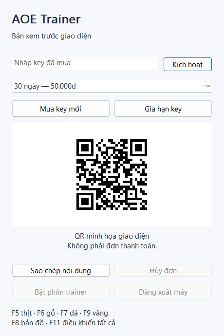

Cộng tài nguyên
Nút +1000 cho thịt, gỗ, đá, vàng. Hoặc cộng / trừ theo bước tự đặt (1 đến 100.000). Trừ không đưa tài nguyên xuống dưới 0.
+1000 · CỘNG / TRỪiAOE là trainer cho Age of Empires và Rise of Rome trên PC. Cộng tài nguyên tức thì, mở toàn bản đồ, điều khiển mọi người chơi — tất cả trong một cửa sổ gọn, với phím tắt bạn tự đặt.

Ảnh minh họa giao diện.
Những thao tác hay lặp lại, gom vào vài phím và vài nút, giữ quyền quyết định trong tay bạn.
Nút +1000 cho thịt, gỗ, đá, vàng. Hoặc cộng / trừ theo bước tự đặt (1 đến 100.000). Trừ không đưa tài nguyên xuống dưới 0.
+1000 · CỘNG / TRỪĐặt mức cộng riêng cho từng loại và chu kỳ (1–3.600 giây). Bật một phím, tài nguyên tự tăng đều trong trận.
TỰ ĐỘNG THEO CHU KỲMở toàn bộ bản đồ hoặc bật/tắt sương mù tức thì, rồi khôi phục lại như cũ khi cần.
HIỆN / ẨN BẢN ĐỒBật điều khiển tất cả, chuyển sang Gaia hoặc người chơi kế tiếp để thao tác bất kỳ phe nào trong trận.
GAIA · ĐỔI NGƯỜI CHƠI22 chức năng, đổi được từng tổ hợp phím. Không cho trùng, báo ngay khi phím bị app khác chiếm.
TỰ ĐẶT 22 PHÍMNhận diện 30 bản EXE Age of Empires / Rise of Rome. Tự kiểm tra bản mới mỗi khi mở.
30 BẢN EXE · AUTO UPDATEChọn số ngày từ 1 đến 365. Mua và gia hạn ngay trong tool bằng mã QR ngân hàng.
Dùng thử trọn một tuần.
Phổ biến nhất cho người chơi đều.
Tiết kiệm cho ba tháng.
Giá tốt nhất cho cả nửa năm.
Chọn số ngày bất kỳ. Giữa các mốc trên, giá được nội suy theo ngày (ví dụ 1 ngày 3.000đ, 10 ngày 20.000đ). Gia hạn cộng dồn vào thời gian còn lại của cùng một key.
Cửa sổ dọc gọn gàng với ba tab: Chức năng, Key và Hướng dẫn.
Tải iAOE.exe từ bản phát hành, đặt trong thư mục bạn có quyền ghi để tool tự cập nhật. Mở bằng quyền Administrator.
Sang tab Key, chọn số ngày rồi bấm Nạp / Gia hạn. Quét QR, chuyển đúng số tiền và nội dung. Tiền về là tool tự kích hoạt.
Mở game, vào trận, để cửa sổ game ở phía trước rồi dùng các phím tắt. Xem tab Hướng dẫn cho danh sách phím.
Một key, một máy. Key gắn với máy đầu tiên kích hoạt. Muốn chuyển sang máy khác, bấm Đăng xuất rồi nhập key ở máy mới. Đóng trainer AutoIt cũ trước khi dùng để tránh tranh chấp phím.
Windows 10 / 11 và bản PC của Age of Empires / Rise of Rome (32-bit). Tool tự nhận diện 30 bản EXE khác nhau.
Kiểm tra: tool đã kích hoạt (tab Chức năng hiện ACTIVE), cửa sổ game đang ở phía trước, và app chạy quyền Administrator. Dòng trạng thái cuối tab Chức năng ghi lý do nếu có.
Trong tab Key, chọn số ngày và bấm Nạp / Gia hạn để lấy QR. Chuyển khoản đúng số tiền và nội dung; server nhận tiền sẽ tự cấp key và kích hoạt cho máy của bạn.
Được. Bấm Đăng xuất để nhả key khỏi máy hiện tại, rồi nhập lại key đó ở máy mới.
Trainer hỗ trợ cho Age of Empires / Rise of Rome trên PC.